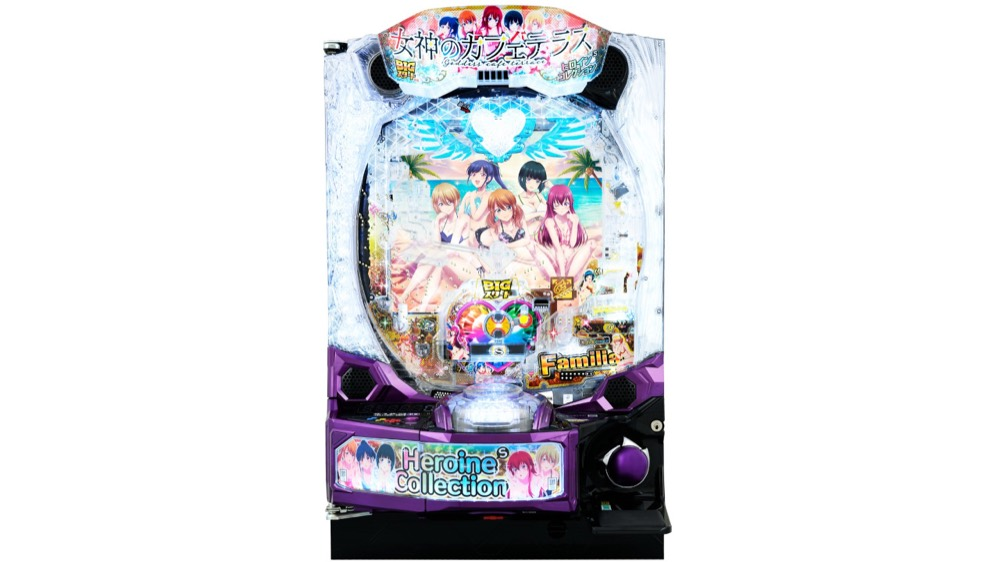

e女神のカフェテラス ヒロインsコレクション
SSルート×BIGスタート。図柄揃いから4500個と上位RUSHへ。
- 導入
- 2026年12月導入予定
- メーカー
- JFJ
- 分類
- パチンコ
主要スペック
2026年12月7日導入予定。女神ジャッジと役物を通して図柄揃いを目指し、4500個以上のBONUSへ進むスマパチです。
- 女神ジャッジ約1/39
- 図柄揃い実質約1/1248
- 上位RUSH継続約70%
e女神のカフェテラス ヒロインsコレクションの見どころと計算条件
2026年12月7日導入予定。女神ジャッジと役物を通して図柄揃いを目指し、4500個以上のBONUSへ進むスマパチです。
女神のカフェテラス コレクションを数字で早分かり
結果では表記出玉と実獲得出玉を分け、250玉貸し・28玉交換の固定条件で差玉と収支を計算します。
三段階で図柄揃いを目指す
ノーマルモードの目安は女神ジャッジ約1/39、成功約1/2、ヒロイン攻略約1/16です。
サイトでは三段階を実質約1/1248の図柄揃いへまとめ、BIGスタートの固定回転率で投資を計算します。
4500個から超ハーレムRUSHへ
図柄揃い時は4500個以上のハーレムチャレンジBONUSへ進み、上位チャレンジ成功期待は約48%です。
役物挙動やジャッジ確率変動システムの全モードは再現せず、図柄揃いと上位当落を簡易体験します。
平均回転と投資目安の計算
通常時の図柄揃い確率は約1/1248です。当サイトでは、1,000円あたり45回転という機種別の固定条件を使い、平均投資目安を「1248 ÷ 45 × 1,000円」で計算します。この条件では約27,700円が平均投資の目安です。
SSルート×BIGスタート、250玉貸し・28玉交換で固定し、ハーレムチャレンジBONUS突入率100%と継続率70%を簡易抽選します。表記出玉とは別に、打ち出しとオーバー入賞を簡易反映した実獲得出玉を収支へ使用します。平均値は長期間の理論上の目安であり、1回ごとの結果や実際の遊技収支を保証するものではありません。
シミュレーション結果の見方
当るまで図柄揃いまでの回転数と投資目安
RUSHハーレムチャレンジBONUSへの突入と連チャン回数
出玉表記出玉と、打ち出しを反映した実獲得出玉
最終収支実獲得出玉を28玉交換で換算した収支目安
結果は自動で「マイ記録」に保存され、同じ機種を何回試したか、最高収支、勝率をあとから確認できます。
簡易シミュレーターについて
図柄揃い・ハーレムチャレンジBONUS・出玉の流れを固定条件で体験できます。JavaScriptを有効にすると、この位置にシミュレーター、演出、マイ記録、機種別ランキングが表示されます。
結果は娯楽・確率理解のための参考表示です。金銭的価値や交換価値はなく、実際の勝敗や収支を保証しません。18歳未満の方の利用はお控えください。
女神のカフェテラス コレクションのよくある質問
女神のカフェテラス コレクションはどんな台？
2026年12月7日導入予定。 女神ジャッジ約1/39が主な確認ポイントです。
女神のカフェテラス コレクションの平均投資目安は？
当サイトの固定条件では1,000円あたり45回転として、平均27,700円が目安です。実店舗の回転率や持ち玉状況で変わるため、実収支を保証する値ではありません。
シミュレーターでは何を体験できる？
図柄揃いまでの回転数、ハーレムチャレンジBONUSへの突入、連チャンと出玉、さらに超ハーレムRUSHを固定条件で簡易抽選します。実機の全演出や内部状態を完全再現するものではありません。
出玉と収支はどう計算する？
スペック上の表記出玉とは別に、打ち出しロスとオーバー入賞を簡易反映した実獲得出玉を算出します。250玉貸し・28玉交換の固定条件で差玉と収支目安を表示します。
2026年12月7日導入予定です。導入後に固定条件で遊べるようになります。